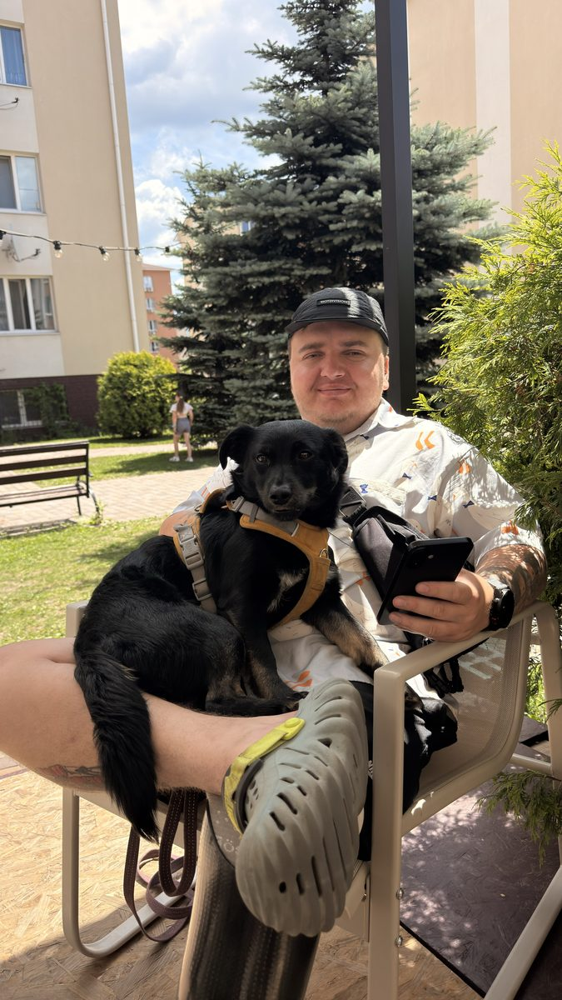
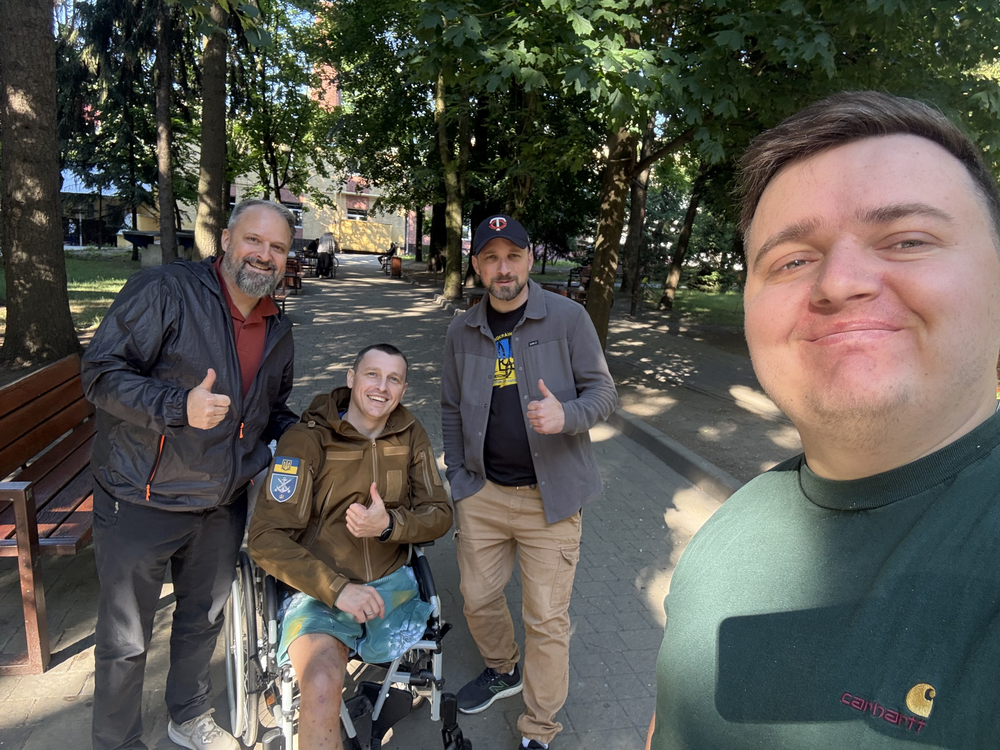
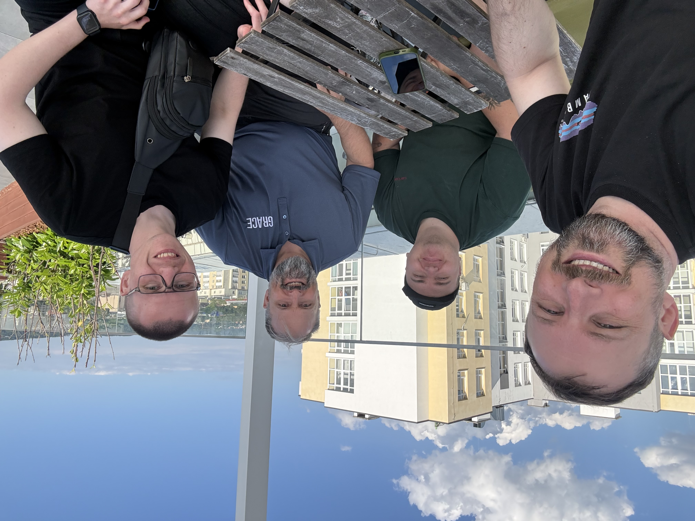
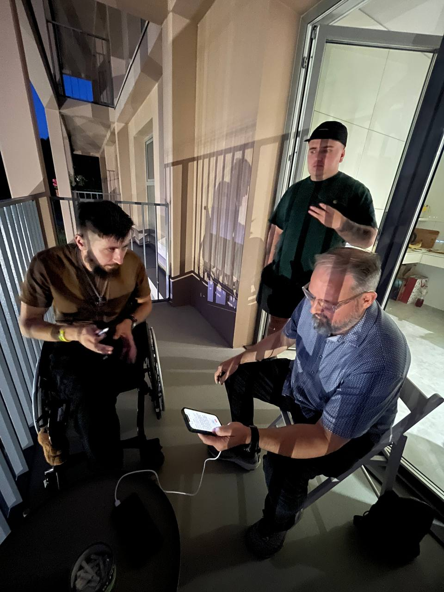

Вітаю друзі, останні новини служіння! 👋
Останні тижні подарували мені знайомство з трьома хлопцями, чиї історії стали свідченням залізної мужності, і нагадали, наскільки сильно кожен із них потребує Божого дотику.

Нарешті пес потрохи долучається до служіння і подорожує зі мною. Це не завжди ідеально, але це наша реальність! 😊
Історія Славіка

«Бо Він спасе убогого, що кличе, і вбогого, що не має помічника... Від утиску й насилля визволить їхні душі»
— Псалом 72
Славік був мобілізований у 2024 році до морської піхоти. Як і я, він служив у розвідці на Харківському напрямку. Під час бойового завдання у Куп'янську їхню позицію помітив ворог. Хлопці відступали під масованим обстрілом і вийшли на заміновану ділянку.
Побратим рухався попереду, коли поряд стався вибух. Славік наступив на міну. Оглушений та поранений, він сам наклав собі турнікет, але перша фіксація не зупинила кровотечу. Він холоднокровно наклав другий турнікет вище, під самий пах. Кров зупинилася. Гадаючи, що побратим загинув, Славік сховався в розвалинах і приготувався чекати.
Він терпів пекельний біль з 9 вечора до 5 ранку без знеболювального. На світанку його знайшла група, серед якої виявився його живий побратим! Евакуація йшла через мінне поле. На жаль, у Києві лікарі вже не змогли врятувати ногу вище коліна.
Але ось у чому диво: Славік залишається неймовірно позитивним. Я поділився з ним новиною про відкриття Superhumans в його рідній Одесі — це чудовий шанс для реабілітації поруч із сім'єю.
Історія Саші

«Поклади на Господа журбу твою, і Він підтримає тебе... Він зцілює зламаних серцем»
— Псалом 55 / 147
Саша зустрів війну в Маріуполі, служачи в підрозділі оркестру морської піхоти. Опинившись у повному оточенні, його підрозділ потрапив у полон. Сашко — дуже вольова людина, але наша команда стала першою, з ким він наважився поділитися тим жахом: «Фізично було важко, але морально нас там просто ламали».
Він був упевнений, що вдома його вже ніхто не чекає. Але дружина виявилася неймовірно сильною жінкою, яка пройшла неможливе, аби його витягнути. Вона досі служить у війську і, будучи старшою за званням, жартома дає йому «накази» під час щоденних дзвінків: сходити до терапевта, потренуватися, випити кави.
І ось справжній перелом: він на волі всього місяць, і видно, що адаптація ще попереду. Це постійне проживання травми по новій, біль і розпач, які накочують хвилями. Проте ми продовжуємо спілкування, і я вірю, що Бог має на нього Свій план.
Історія Назарі

«Він виводить в'язнів із кайданів... Почує Господь убогих, і в'язнями Своїми не зневажить»
— Псалом 68 / 69
Назарі — боєць «Азову», звільнений пів року тому. В полоні він отримав важку спінальну травму від побоїв і зараз пересувається на кріслі колісному. На початку він пережив панічний страх, не відчуваючи праву сторону тіла, але зараз є позитивна динаміка.
Я назвав його «мрійником». У полоні його ліжко стояло біля вікна з решіткою. Назарі годинами дивився на хмари і у своїй уяві подорожував із ними світом. Найважчими стали 60 днів найжорстокішого тиску, коли ворог дізнався про його участь у боях на позиціях.
Але сьогодні — справжнє диво: Назарі дивує життєлюбством: пише пісні, освідчився дівчині та вперто проходить реабілітацію. Лікарі дають хороші шанси. Ба більше, він повністю відкритий до розмов про Бога і сенс життя.
Нові кроки: Superhumans
Усі ці долі — лише крапля в морі. Щоб допомагати професійніше, я налагодив контакт із центром реабілітації Superhumans і планую долучитися до програми «Рівний рівному». Це відкриє двері для щоденного духовного та емоційного служіння ветеранам.
Стати партнером
Ваша підтримка дає змогу бути поруч із хлопцями. Вона покриває ретрити та витрати місії на наступний рік.
Молитовні потреби
- • За Славіка — успішна адаптація до протеза в Одесі.
- • За Сашу — емоційне зцілення після полону.
- • За Назарі — відновлення ніг та відкриття серця Богу.
- • За служіння — розвиток команди на новий робочий рік.
Я щиро вдячний, що ви поруч у цьому служінні. Ваша присутність відчувається навіть на відстані!
«Дух Господа Бога на мені, бо Господь помазав мене... щоб перев'язати зламаних серцем, щоб полоненим звістити свободу, а зв'язаним — визволення!»
— Ісая 61:1Попередній лист
Квітень 2026
Наступний лист
Це найновіший лист

Олександр Килюшик
З благословенням у Христі
Служіння серед військових · Місія «Україна для Христа»